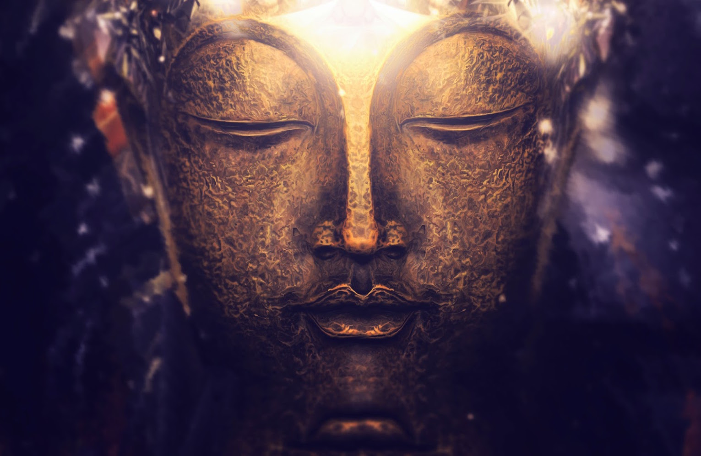

- 563 BC - Birth -
Siddhartha Gautama is born in Lumbini, near the Nepalese-Indian border to his father, King Suddhodana, ruler of the Sakya tribe, and his mother, Queen Mayadevi. The father gives his son the name of Siddhartha (=the one who obtains success and prosperity), his second name is Gautama (=name of the clan).
Seers predict that Siddhartha will either become a Universal Monarch or a Buddha. Asita, the wisest of the seers, is sure that he will become a Buddha (=one who has supreme knowledge). His mother dies seven days after the birth.
- 563-547 BC -
Siddhartha spends his childhood in the palace of his father at Kapilavastu, Southern Nepal, where he is raised by his aunt Mahaprajapati until the age of seven. In his early childhood, during a ploughing ceremony, Siddhartha makes his first unprecedented spiritual experience, where in the course of meditation he develops the first jhana (=meditative absorption) through concentration.
As a young boy he learns the skills of a warrior, including the technical and athletic skills of man-to-man fight. Siddhartha is trained in spiritual disciplines and becomes proficient in the art of archery.
- 547 BC -
At the early age of sixteen, he marries his beautiful cousin Princess Yasodhara, who is of equal age.
- 547-533 BC -
The young prince spends thirteen more years together with his wife in the royal court of his father. Three palaces are built for him, one for the cold season, one for the hot season, and one for the rainy season. Siddhartha enjoys the lavish court life while his father is trying to screen him from all troubles and worries. A son is born while Siddhartha is in his late twenties.
- 533 BC - The Four Sights -
Despite of the amenities of life, Siddhartha is not satisfied with the mere enjoyment of fleeting pleasures due to his inquiring and contemplative nature. One day, he leaves the palace for an excursion and there he encounters what so far has been purposely veiled from him:
He sees a decrepit old man, a diseased person, a corpse being cremated, and a sadhu (=holy man, hermit). Siddhartha realises that there is old age, sickness, and death, and that people ultimately have little control over their lives. The fourth sight provides the inspiration that leads to a dramatic change in his life.
- 533 BC - The Renunciation -
In the night of his 29th birthday, Siddhartha gives up his life as a prince and secretly leaves the court while everyone is asleep. He travels far and crosses the river Anoma, where he shaves his hair and hands over his princely garments to his groom Channa, with instructions to return them to the palace.
- 533-528 BC -
The Bodhisattva (=future Buddha), who once lived in luxury, becomes a penniless and homeless wanderer. He leads a life of self-mortification and spiritual study, becomes first a disciple of several then famous Brahman teachers, and later attracts his own disciples.
After a long and exhausting period of searching and self-mortification, he finally becomes disillusioned with the Indian caste system, Hindu asceticism, and the religious doctrines of his time. He gives up the ascetic life and loses all of his disciples as a result. Nevertheless, he continues his search for truth through the practice of meditation.
- April/May 528 BC - Enlightenment -
While meditating under a Bodhi tree in Bodh-Gaya, south of Gaya in the state of Bihar, India, the Bodhisattva experiences the Great Enlightenment, which reveals to him the way of salvation from suffering. He spends seven weeks meditating in the vicinity of the site of the Bodhi tree and attains the status of a fully realised Buddha at the age of 35.
- June/July 528 BC - First Sermon -
Buddha finds his former five disciples in Benares. In his first sermon he teaches them what will become the gist of Buddhism. Upon hearing it, one of the disciples instantly attains the status of an arhat (=one with enlightened wisdom). This event marks the beginning of the Buddhist teaching and his disciples become the first five members of the sangha (=Buddhist order).
- 528-527 BC -
During a short period of time, Buddha establishes a great reputation in western Hindustan by converting thousands of people to the dhamma (=the Buddhist teaching). People hear the dhamma delivered either by himself, or by the monks of his order. During this time he delivers the fire sermon.
- March 527 BC -
The Buddha briefly returns to the palace of his father to convert the royal family and ordains many of the Sakya tribe.
- 523 BC -
Four years later Siddhartha's father, King Suddhodana, dies. Buddha returns to the palace and Mahaprajapati, where Buddha's aunt -upon meeting Buddha- becomes the first woman to ordain, despite of the protest of some contemporaries. From this moment on women were admitted to the sangha. According to Indian tradition, however, they were separated and under the authority of male monks.
- 523-483 BC -
In the 45 years following his enlightenment, Buddha travels around Northern India to teach the tenets of Buddhism. He is extremely successful and attracts first thousands, then ten thousands, and later hundred thousands of people from all walks of life, who voluntarily decide to follow his teachings, the dhamma. During the monsoon, when travelling becomes difficult due to the weather, Buddha and his close followers interrupt their journey. During these month, monks, as well as laypeople, receive the teachings at a site selected for retreat. One such site is Sravasti in Nepal, which has become very famous since then.
Buddha's success does not only attract admirers, but also provokes envy and ill will. Several attempts are made on his life, but all of them fail. Although he is being criticised and defamed, this does not affect the popularity of his teaching.
- 483 BC - Buddha passes into Nirvana -
Having achieved the goal of spreading the teaching to the greatest number of people, Buddha dies at the age of eighty years, as a result of food poisoning. He dies in a forest near Kusinagara, Nepal, in the company of his followers reclining on a bed where he speaks his last words: "All compounded things are ephemeral; work diligently on your salvation." With these words on his lips, he passes into the state of Nirvana.